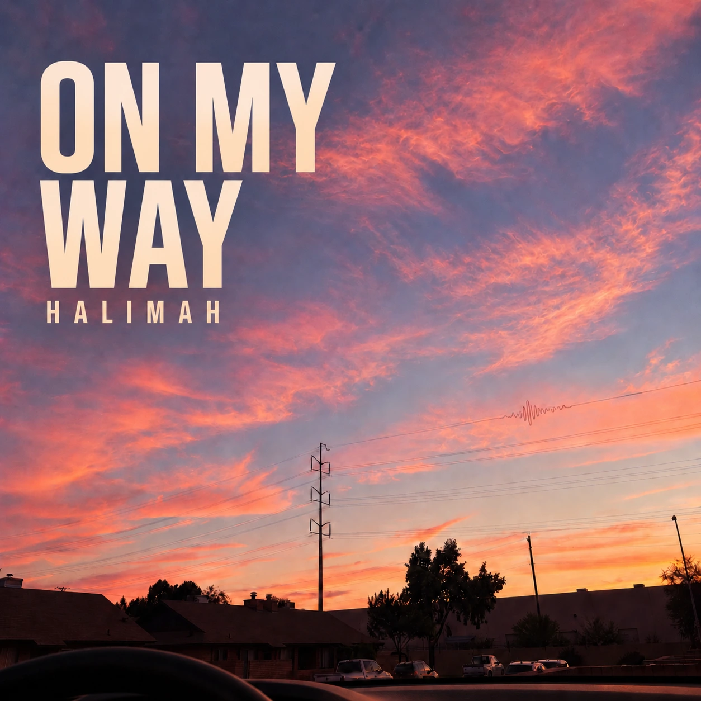
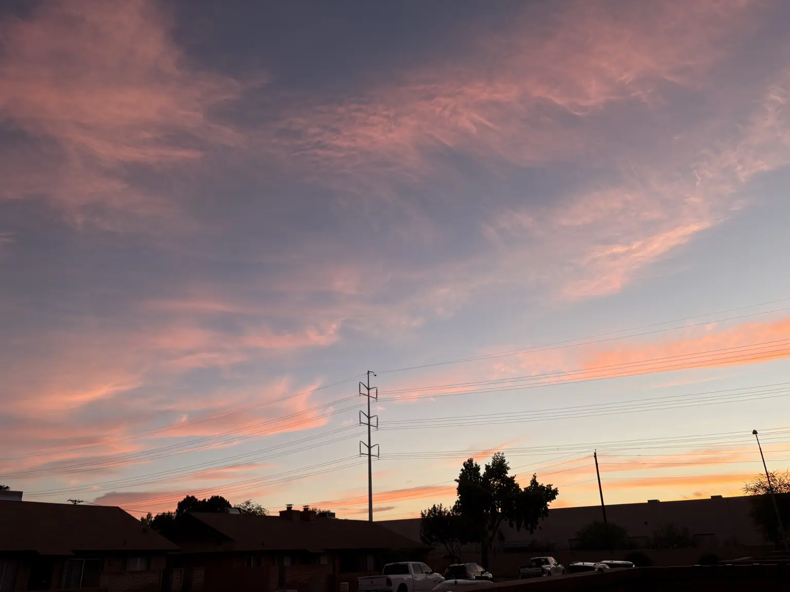
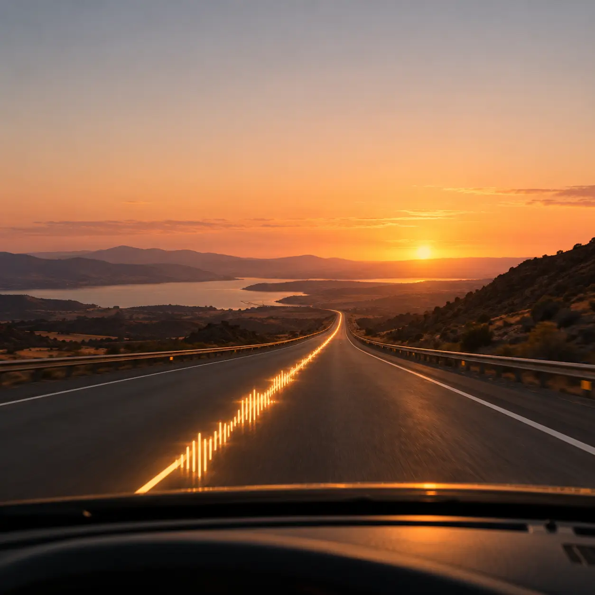
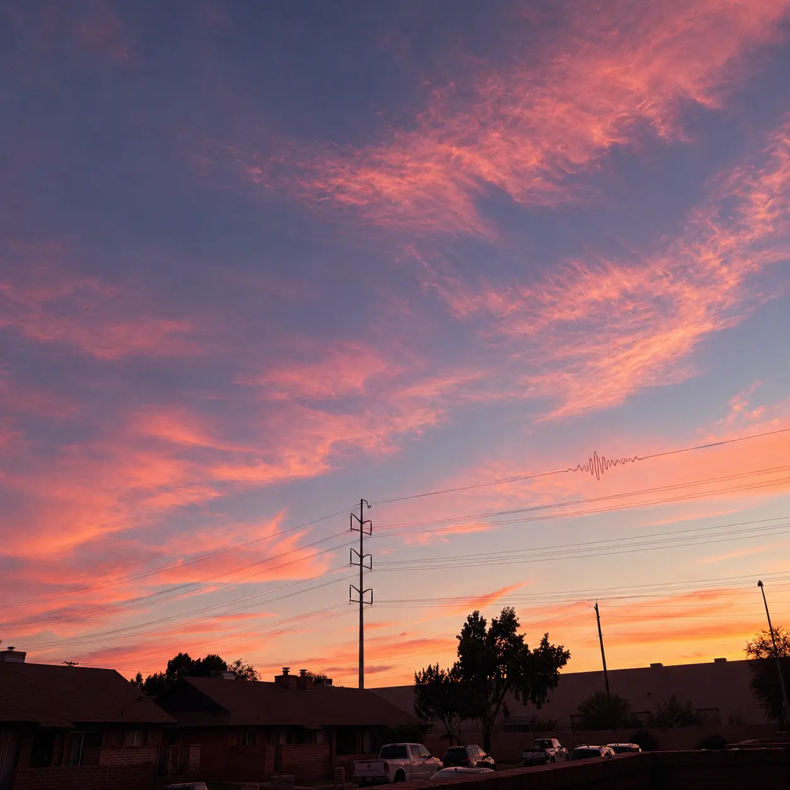
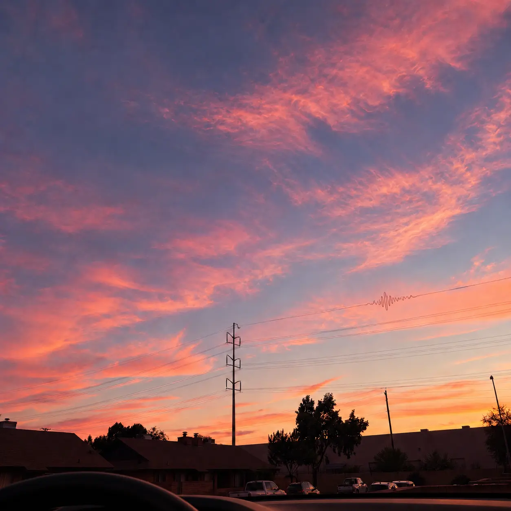

Original rap song · 2026
On My Way
“On My Way” is a personal rap song I wrote for my partner while driving. The lyrics are romantic, playful, and honest, so the cover turns the view from the car into a warm memory.

Visual direction
A song written in motion
The original sunset photograph became the starting point. I kept the pink and lavender sky, the dark neighborhood silhouettes, and the power lines to make the design feel real and personal.
The car dashboard and steering wheel place the listener inside the moment. A small waveform follows one power line as a quiet reference to music and voice-to-text.
Starting point
Reference from the drive

Prompt experiments
Refining the cover
I tested the title placement, road view, dashboard, and the amount of visual detail.



Reflection
The strongest choice was keeping the cover simple.
The final image feels connected to the song because it shows the exact kind of moment when I wrote it. The warm sky creates the romantic mood, while the dashboard, title, and waveform make the story clear without adding too much.